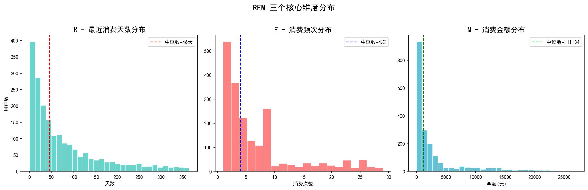
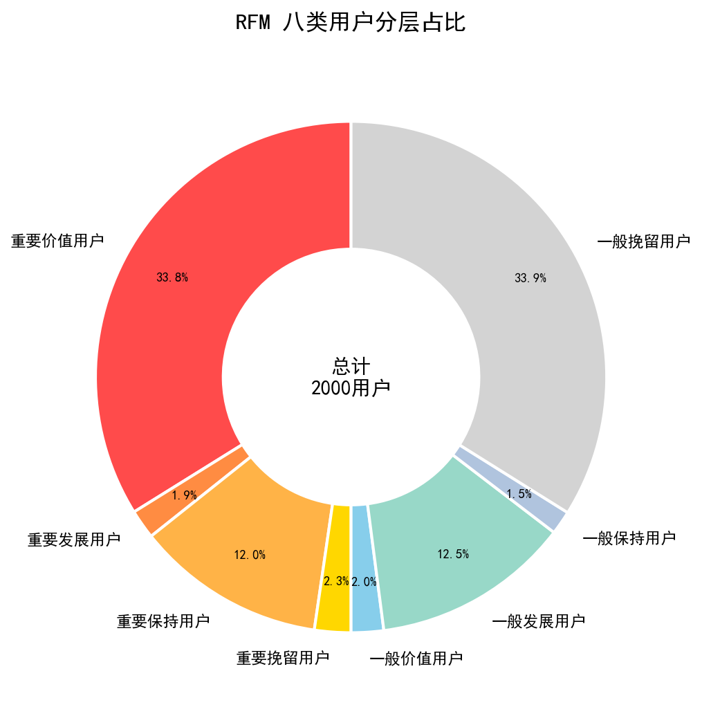
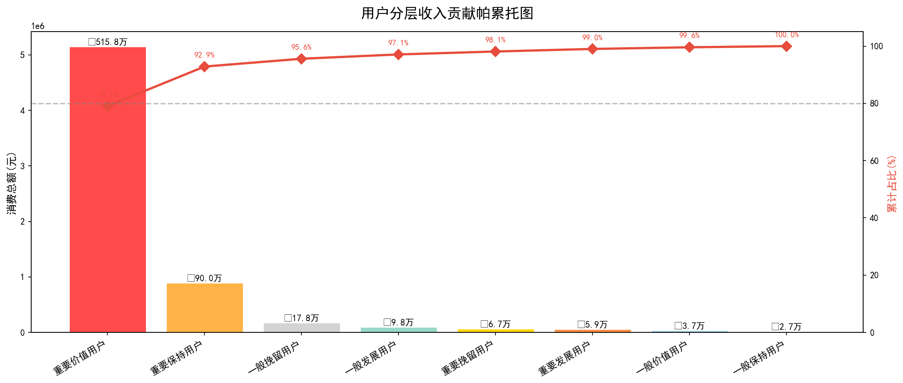
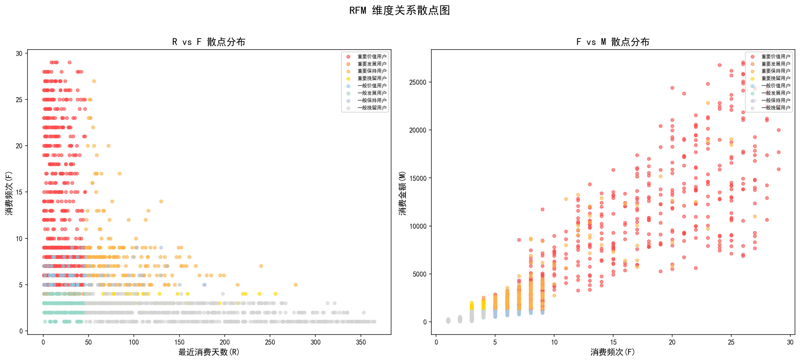
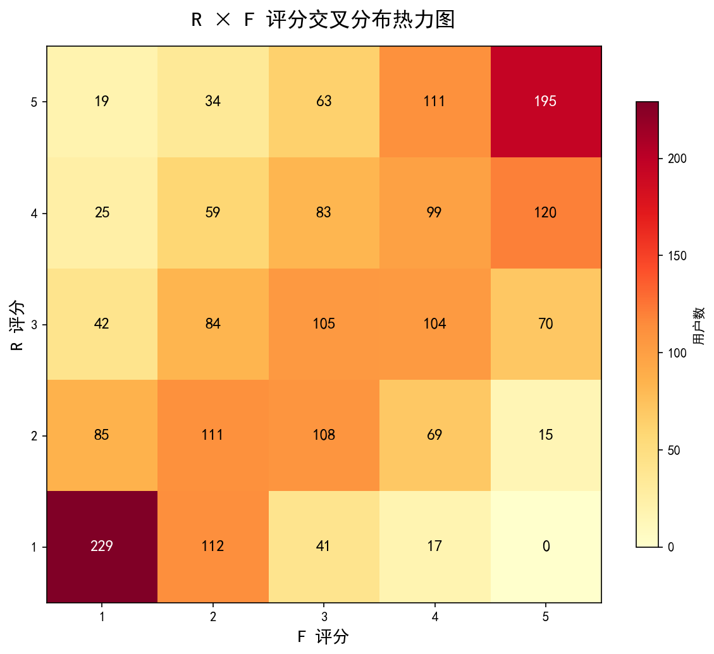
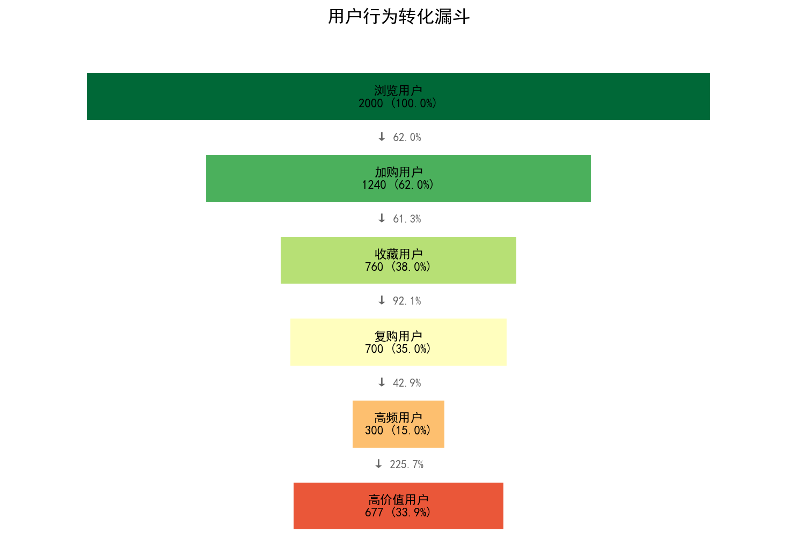
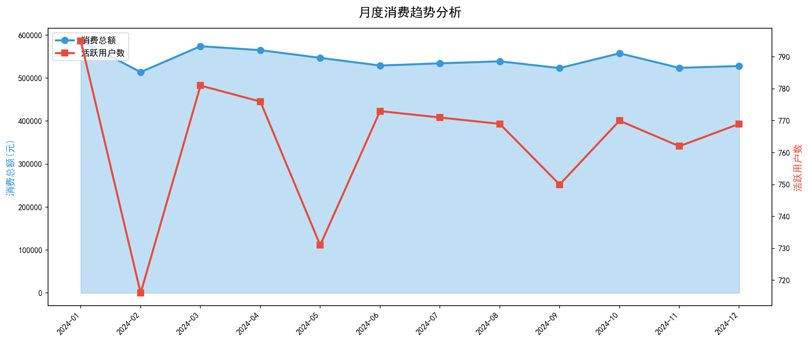

用户价值分析 · User Segmentation
基于 Recency-Frequency-Monetary 模型，精准识别 2,000 名用户的价值层级与行为特征
Contents · 目录
为什么做 RFM，模型怎么建。
核心指标与 RFM 维度统计。
八类用户全景图与帕累托分析。
维度相关性、漏斗与月度趋势。
差异化方案与行动优先级。
核心发现与后续计划。
Framework · 分析框架
最近一次消费距今天数
衡量用户活跃度
统计周期内的消费次数
衡量用户忠诚度
统计周期内的累计消费额
衡量用户贡献度
分层方法：按各维度中位数划分高/低两组，组合得到 8 类用户。R ≤46天为高，F >4次为高，M >¥1,134为高。
Overview · 数据概览
总用户数
独立用户
总订单数
全年订单
总交易额
全年 GMV
平均客单价
每笔订单
Distribution · 维度分布
| 统计量 | R(天) | F(次) | M(元) |
|---|---|---|---|
| 均值 | 79.0 | 6.9 | 3,262 |
| 中位数 | 46.0 | 4.0 | 1,134 |
| 标准差 | 84.3 | 6.7 | 5,144 |
| 最小值 | 1 | 1 | 16 |
| 最大值 | 365 | 29 | 27,055 |
关键发现：R 维度右偏分布，大量用户近期活跃；F 呈指数衰减，低频用户占比高；M 显著右偏，少数用户贡献绝大部分收入。

Section · 03
八类用户 · 帕累托效应 · 收入贡献
Segmentation · 用户分层

Details · 详细数据
| 用户层级 | 用户数 | 占比 | 平均R(天) | 平均F(次) | 平均M(元) | 收入贡献 |
|---|---|---|---|---|---|---|
| 重要价值用户 | 677 | 33.9% | 17.7 | 13.3 | ¥7,619 | 79.1% |
| 重要发展用户 | 37 | 1.8% | 23.6 | 3.8 | ¥1,584 | 0.9% |
| 重要保持用户 | 240 | 12.0% | 85.2 | 8.3 | ¥3,749 | 13.8% |
| 重要挽留用户 | 46 | 2.3% | 107.4 | 3.6 | ¥1,451 | 1.0% |
| 一般价值用户 | 41 | 2.1% | 22.4 | 6.2 | ¥908 | 0.6% |
| 一般发展用户 | 251 | 12.6% | 23.0 | 2.6 | ¥392 | 1.5% |
| 一般保持用户 | 30 | 1.5% | 90.2 | 6.0 | ¥896 | 0.4% |
| 一般挽留用户 | 678 | 33.9% | 162.9 | 2.0 | ¥262 | 2.7% |
Pareto · 帕累托效应
重要价值用户占比
贡献了
总收入占比

Correlation · 维度相关性


高频用户往往也是高消费用户
近期活跃的用户消费频次更高
聚集在低R、高F、高M区域
Funnel & Trend · 行为分析


Top Users · 高价值用户
| 排名 | 用户ID | R(天) | F(次) | M(元) | R分 | F分 | M分 |
|---|---|---|---|---|---|---|---|
| 1 | U00386 | 28 | 26 | ¥27,055 | 4 | 5 | 5 |
| 2 | U01628 | 25 | 26 | ¥26,890 | 4 | 5 | 5 |
| 3 | U00001 | 5 | 24 | ¥26,786 | 5 | 5 | 5 |
| 4 | U00413 | 4 | 25 | ¥26,205 | 5 | 5 | 5 |
| 5 | U01741 | 4 | 26 | ¥25,892 | 5 | 5 | 5 |
| 6 | U01620 | 19 | 26 | ¥25,797 | 4 | 5 | 5 |
| 7 | U01215 | 26 | 25 | ¥25,695 | 4 | 5 | 5 |
| 8 | U01971 | 11 | 26 | ¥25,089 | 5 | 5 | 5 |
| 9 | U00141 | 38 | 26 | ¥24,879 | 3 | 5 | 5 |
| 10 | U01455 | 1 | 23 | ¥24,815 | 5 | 5 | 5 |
Strategy · 运营策略
专属客服 · 优先体验新品 · 积分加倍
个性化 Push · 专属优惠券 · 生日关怀
组合推荐 · 满减引导多次购买
大额优惠券 · 问卷调研流失原因
Summary · 核心结论
Python + Pandas + Matplotlib 自动生成 · RFM 分层模型